Python koans lessons
One short explanation per chapter, with a picture wherever a picture says it faster. Every diagram is a plain SVG under lessons/svg/. The same lesson, in words, is at the top of each koan file.
01Classes and instances
A class is a blueprint; calling it makes an instance and runs __init__ with the instance as self. Attributes set on self live in that one instance's dict. A name assigned in the class body is a class attribute, shared by every instance. Reading obj.name checks the instance dict first, then the class.
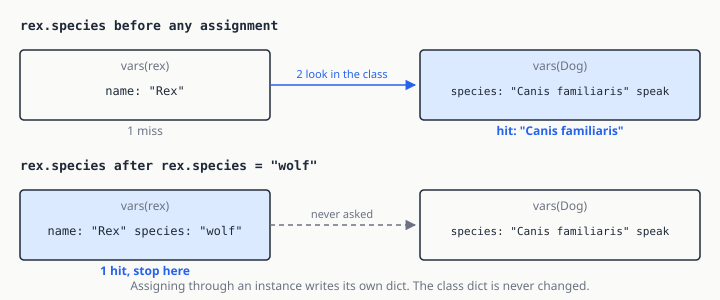
rex.species = "wolf" changes Rex and nobody else: it writes the instance dict, and lookup stops there.02Dunder methods
Operators and builtins are calls to double-underscore methods: len(x) is x.__len__(), x == y is x.__eq__(y), x + y is x.__add__(y). __repr__ is for developers and should look like the constructor call; __str__ is for people. Defining __eq__ deletes the default __hash__, so define both over the same fields. Return NotImplemented for operands you do not understand.
03Properties and encapsulation
Nothing is private. A leading underscore asks readers not to touch. @property makes a method read like an attribute, and a setter runs code on assignment, so you can start with a plain attribute and add validation later without changing a single caller. Two leading underscores mangle the name to _Class__name; that avoids clashes, it does not hide.
04Classmethods and staticmethods
A method gets the instance. @classmethod gets the class as cls, which is what you want for alternate constructors like from_string, because cls(...) builds whatever subclass it was called on. @staticmethod gets nothing: a plain function that lives in the class because it belongs near it.
05Inheritance and the MRO
class Dog(Animal) means a Dog is an Animal. Lookup walks the method resolution order and stops at the first class that has the name. super() is not "the parent": it is the next class in the MRO of the object, which with multiple inheritance can be a sibling.
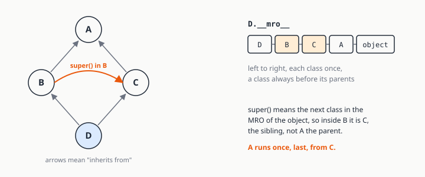
super().__init__() calls runs A exactly once.06Abstract classes and protocols
An ABC lists methods subclasses must provide, marked @abstractmethod; Python refuses to instantiate a class that still has one. Duck typing needs no base class at all: a function uses whatever has the methods it calls. typing.Protocol writes the duck down; @runtime_checkable lets isinstance check it. collections.abc ships ready-made ones like Sized and Iterable.
07Dataclasses
@dataclass reads the annotated fields and writes __init__, __repr__ and __eq__. Defaults come after required fields. A mutable default is refused; use field(default_factory=list). frozen=True makes instances read-only and hashable, order=True adds comparisons field by field, and __post_init__ is where a field is computed from the others.
08Iterators and generators
A for loop calls iter() once, then next() until StopIteration. An iterable has __iter__; an iterator also has __next__. A function with yield returns a generator, which is an iterator that keeps its own place. Every structure in the second half is made iterable by an __iter__ written with yield.
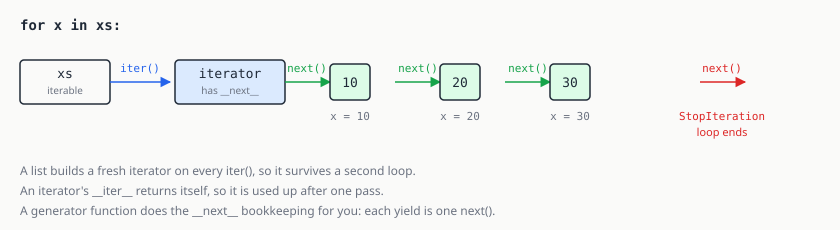
for does behind the scenes. A list survives a second loop because iter() hands out a fresh iterator; an iterator is used up after one pass.09Composition, __call__, context managers
Inheritance is is-a; composition is has-a. Keep another object as an attribute and forward the calls you need. __getattr__ runs only when normal lookup fails, so one of them can forward everything else. __call__ makes an instance callable. with runs __enter__, the block, then __exit__ always, handing it any exception; contextlib.contextmanager builds the same thing from a generator with one yield.
10Complexity
Big-O names the shape of growth in steps as the input size n grows, not the seconds. A list index is O(1). Searching a list is O(n). Comparing every pair is O(n²). Searching a set is O(1) on average because a hash picks the slot.
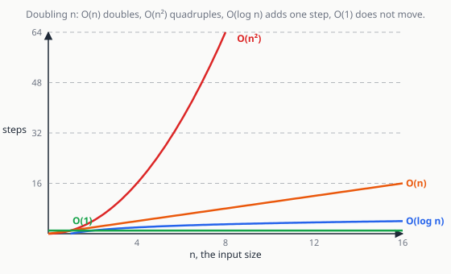
11Stacks and queues
A stack is last in, first out: push and pop at the same end, which is the end of a list. A queue is first in, first out: join at the back, leave from the front. A list is a bad queue because removing index 0 shifts everything; collections.deque is cheap at both ends.
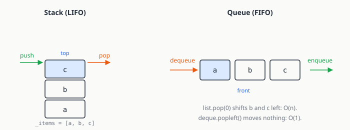
12Linked lists
Each item sits in its own node with a pointer to the next; the list is one pointer to the first node. Every operation is a walk from head following next until None. Changing the list means changing pointers, not moving items.
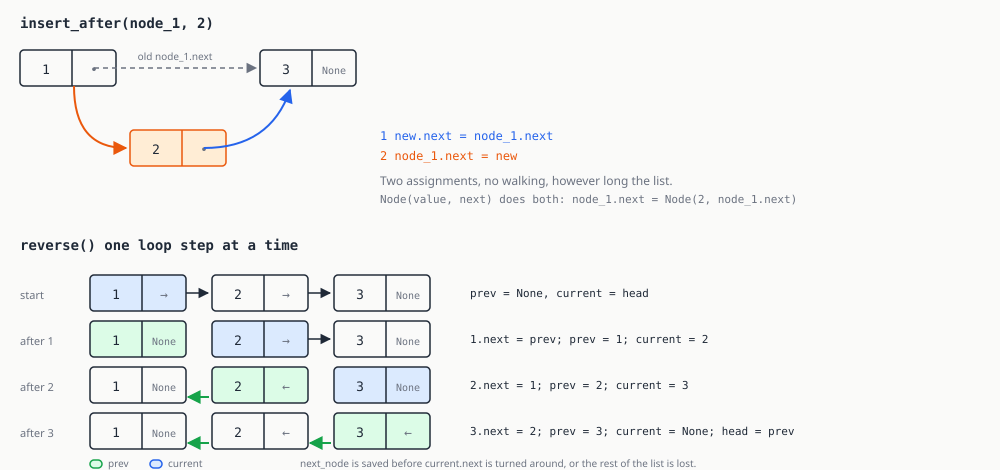
next_node before turning current.next around or the rest of the list is gone.13Recursion
A recursive function calls itself on a smaller piece. It needs a base case that returns without recursing, and every other call must move toward it. Each call gets its own frame on a stack; frames pile up to the base case, then unwind. Around a thousand frames Python raises RecursionError.
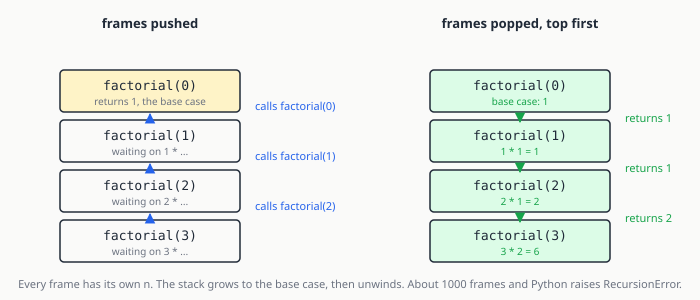
14Searching and sorting
Linear search checks every item. Binary search needs a sorted list and throws away half at each look: about 20 looks for a million items. Bubble and insertion sort are simple and O(n²). Merge sort and quick sort split the list, recurse, and put the pieces back together in O(n log n). Every comparison is <, so a class with __lt__ sorts.
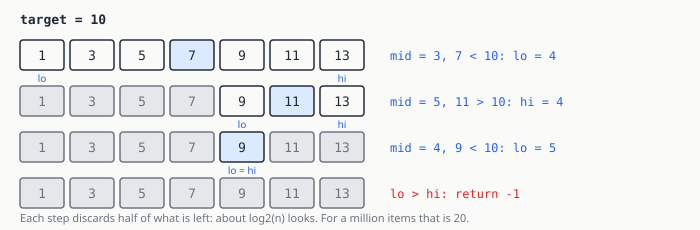
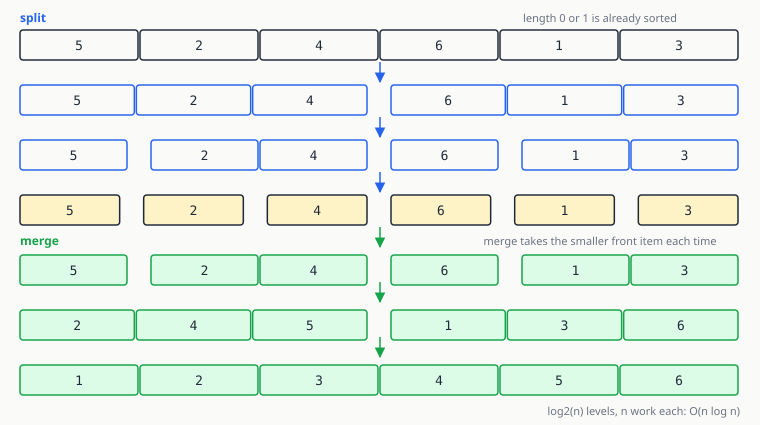
15Hash maps and sets
A dict is a list of buckets. hash(key) % len(buckets) picks one bucket; the pair goes in it. Lookup computes the same index and walks that one short bucket comparing keys with ==. Two keys in one bucket is a collision and is normal. When pairs outnumber buckets, double the buckets and re-place everything. A set is the same structure with keys only.
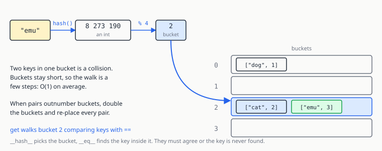
__hash__ and __eq__ must agree: hash chooses the bucket, equality finds the key inside it.16Binary trees
Each node has up to two children. In a binary search tree everything left of a node is smaller and everything right is larger, so a lookup walks down one path, discarding half the tree per step. Most tree functions are recursive: handle None, then the node, then each child. Height is the longest path from root to leaf.
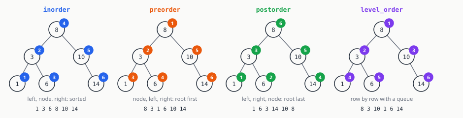
17Heaps
A min-heap is a tree with one rule: every parent is no larger than its children, so the smallest item is always the root. It lives in a plain list, row by row, and the parent and child links are index arithmetic. Push appends and sifts up; pop moves the last item to the root and sifts down. Both are O(log n). heapq does the same on any list.
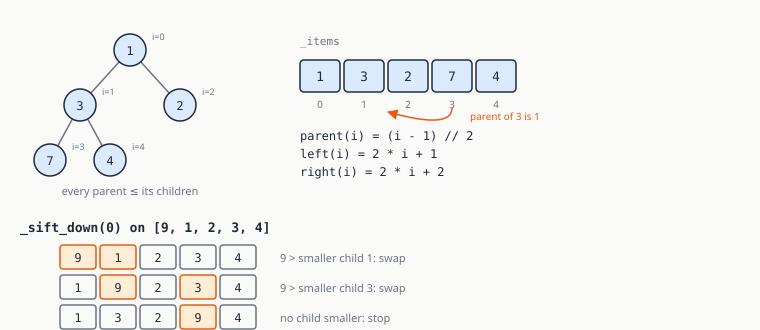
18Graphs
Nodes joined by edges, stored as a dict from each node to its neighbours. Breadth-first search uses a queue and reaches every node by a shortest path. Depth-first search follows one path to its end, by recursion or a stack. Both need a seen set because graphs have cycles. Dijkstra is BFS with a heap keyed by distance, for weighted edges.
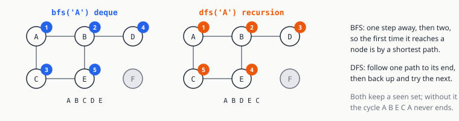
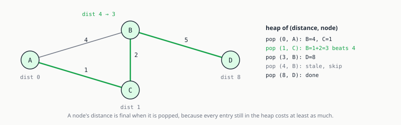
19Dynamic programming
When a problem breaks into smaller copies of itself and the same copies recur, solve each once. Memoisation is top down: recurse, but check a dict before recomputing. Tabulation is bottom up: fill a table from the smallest cases with no recursion. Name the subproblem, decide how a cell depends on earlier cells, fill in order.
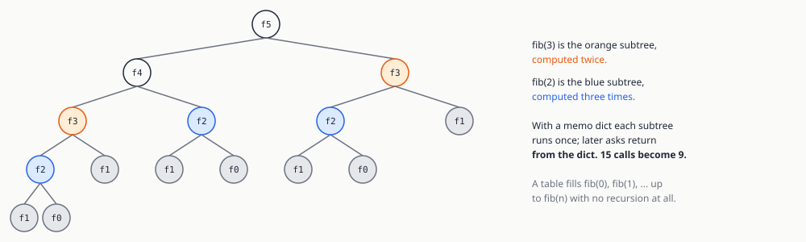
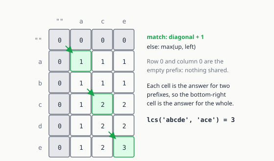
20Files, bytes and text
open() returns a cursor into the file, not its contents. read() takes everything from the cursor to the end; read(n) takes at most n, the last piece is short, and the empty value after it is the signal to stop. Mode "r" decodes bytes into str with an encoding, "rb" hands over raw bytes, and the wrong encoding raises UnicodeDecodeError. A file object is an iterator, so a for loop yields one line at a time in constant memory; io.StringIO and io.BytesIO are the same interface in memory, and with closes the file on the way out.
21Generator pipelines
A stage is a generator that takes an iterable and yields its own values. Chain stages and one item flows all the way through before the next is read from the source, so a ten-line file and a ten-million-line file cost the same memory. map, filter, itertools.chain, islice, takewhile and groupby are ready-made lazy stages, and an infinite source is fine as long as a later stage stops. gen.send(value) makes a paused yield evaluate to value after a priming next(); gen.close() raises GeneratorExit at the pause so a finally around the yield still runs. Pipeline(source) | stage | stage is __or__ from chapter 02 wrapping each stage around the last.
22Threads, locks and queues
A thread is a second line of execution that shares every object with the one that started it. Thread(target=f).start() begins it and join() waits for it. Sharing is the danger: counter += 1 is read, add, write, and two threads that both read before either writes lose an update. with lock: lets one thread at a time through the block, and an RLock lets its owner back in. The GIL means threads only overlap while they wait, so they help sleeping and I/O, not arithmetic. queue.Queue hands work between threads safely; a None sentinel stops a worker, and queue.join() waits until every item is marked task_done.
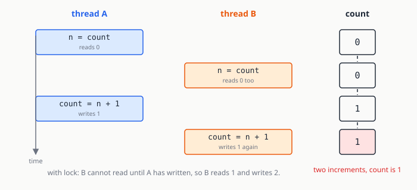
23Executors and futures
An executor owns a pool of workers. submit hands it a callable and returns a Future at once; result() waits for the value, and re-raises anything the callable raised. map returns results in input order, as_completed yields futures in the order they finish, and leaving the with block waits for every task. ThreadPoolExecutor shares one interpreter, so it helps work that waits; ProcessPoolExecutor starts separate processes, each with its own GIL, so work that computes runs in parallel, at the cost of pickling arguments and results across.
24asyncio: coroutines and tasks
A coroutine is interrupted only where it says so, at an await; one thread and one event loop take turns between many of them. Calling an async def runs nothing, like calling a generator; asyncio.run drives it, and await pauses here until the value arrives, so sequential awaits run one after the other. gather, create_task and TaskGroup wrap coroutines in tasks that run together; a failing task cancels its siblings, asyncio.timeout cancels on a deadline, and a cancelled task sees CancelledError at its await. time.sleep is not an await, so it freezes every task; asyncio.sleep hands control back.
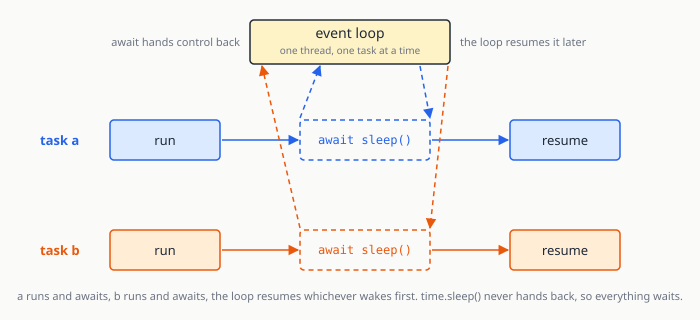
await hands control back to the loop, which runs whoever is ready and resumes the task later; nothing switches between awaits.25Async iteration, queues and streams
async for is for with an await in each step: it calls __aiter__ once, then awaits __anext__ until StopAsyncIteration. A yield inside async def makes an async generator, which may await between values. asyncio.Queue is chapter 22's queue for tasks: await q.get() parks the consumer until a put arrives, and task_done() with await q.join() replaces the sentinel. A stream is a socket behind a reader and a writer: start_server on port 0 lets the OS choose, write() only buffers and await drain() waits until the buffer has emptied enough to keep writing, and empty bytes from readline() or read() mean the other side sent write_eof() or closed.
26pytest: mocks, patches and the boundary
A save handler calls task.delay(pk), which queues work for a worker elsewhere and returns at once; its test wants to know what was handed over, not to run the worker. MagicMock accepts any call and records it: called, call_count, call_args, and assert_called_once_with or assert_not_called as questions put to that recording. An assertion on a mock is a claim about what the code under test sent, never about what the real task would do. patch("koan_tasks.decrypt.delay") imports the module the string starts with, walks the dots, swaps in a mock for the block or the decorated test, and restores the original afterwards; it must name the place the code looks the name up at call time. Stacked decorators arrive bottom up, the one nearest the def first, and *_mocks catches patches that exist only to silence. autospec=True keeps the real signature, a MagicMock cannot be awaited so coroutines need AsyncMock, and pytest's monkeypatch is the same swap without the mock.